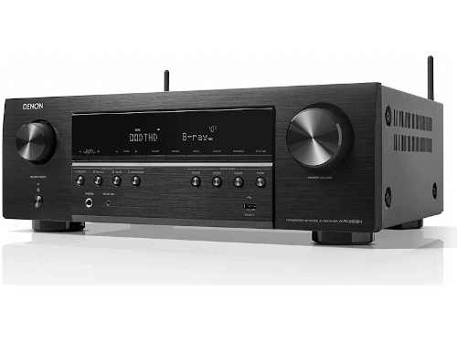

Receptor AV - AVR-S660H DENON
| Tipus de dispositiu | Receptor |
|---|---|
| Transmissió | Inalàmbrica i per fil |
| Subwoofer | No |
| Connectivitat | WiFi, AUX, Bluetooth, Coaxial, HDMI, RCA |
| Número de ports HDMI | 6 ( 5 entrades i 1 sortida eARC) |
| Característiques especials | Comandament a distància |
| Color del producte | Negre |
| Contingut | Receptor, cable de corrent, comandament a distància, manual d'usuari |
- Amplificador AV de 5.2 canals 8K amb 135 W per canal
- Compatible amb Dolby TrueHD, Dolby Surround, DTS-HD Master Audio i DTS Neo:6
- Tecnologia HEOS® integrada
- Funciona amb Amazon Alexa i Siri d'Apple (control per veu)
- L'últim en especificacions HDMI